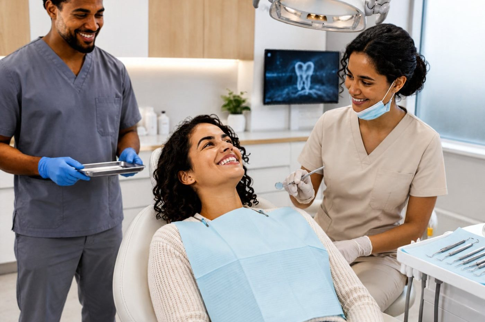

Moema · a 300 m do metrô
Da torção no futebol à cirurgia de joelho, com o mesmo médico.
Avaliação completa em 40 minutos, com exames de imagem feitos na própria clínica e plano de tratamento explicado antes de qualquer procedimento.
- 16
- anos cuidando do bairro
- 38 mil
- pacientes atendidos
- 11
- especialistas na equipe
- 4,9
- nota média no Google, em 1.240 avaliações
Especialidades
Todas no mesmo endereço, com prontuário único. Você não repete sua história a cada profissional.
Clínica geral
Consulta de rotina, check-up anual, controle de pressão, diabetes e colesterol.
Odontologia
Limpeza, restaurações, canal, aparelho, implantes e clareamento.
Dermatologia
Acne, manchas, queda de cabelo, mapeamento de pintas e pequenos procedimentos.
Ortopedia
Dores na coluna, joelho e ombro, lesões esportivas e acompanhamento pós-cirúrgico.
Fisioterapia
Reabilitação, pilates clínico, RPG e drenagem, com avaliação postural.
Exames de imagem
Radiografia digital, ultrassom e eletrocardiograma, com laudo no mesmo dia.
Como é a primeira consulta
- 1
Conversa
Você conta o que incomoda e o que espera. Sem pressa e sem cadeira reclinada.
- 2
Exame e imagem
Avaliação clínica e exames de imagem feitos na hora, no mesmo andar.
- 3
Plano por escrito
Você sai com o diagnóstico, as opções de tratamento, os prazos e os valores.
- 4
Decisão sua
Sem pressão para fechar. O orçamento vale por 60 dias.
Tratamentos e valores
Valores de referência para atendimento particular. Convênios aceitos: Amil, Bradesco, SulAmérica e Unimed.
| Consultas | ||
|---|---|---|
| Consulta com clínico geral | Com retorno em até 15 dias | R$ 180 |
| Consulta com especialista | Dermato, ortopedia ou cardiologia | R$ 260 |
| Avaliação odontológica | Inclui radiografia panorâmica | R$ 150 |
| Teleconsulta | Retornos e resultados de exames | R$ 120 |
| Procedimentos | ||
| Limpeza dental completa | Profilaxia e aplicação de flúor | R$ 220 |
| Clareamento dental | Consultório e moldeira caseira | R$ 690 |
| Sessão de fisioterapia | 50 minutos, individual | R$ 130 |
| Exames | ||
| Check-up essencial | Consulta, sangue e eletrocardiograma | R$ 480 |
| Ultrassom | Abdome, tireoide ou articulações | R$ 210 |
| Radiografia digital | Laudo em até 2 horas | R$ 95 |
“Fugi de dentista por dez anos. Aqui me explicaram cada etapa, mostraram a radiografia na tela e respeitaram o meu tempo. Terminei o tratamento sem faltar a uma consulta.”
Está com dor agora? Fale com a gente
Guardamos horários de encaixe todos os dias para urgências. Confirmamos pelo WhatsApp em até uma hora.
- Endereço
- Alameda dos Arapanés, 1.020 — Moema, São Paulo
- Telefone
- (11) 5000-0000
- contato@clinica.com.br